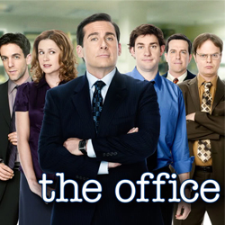

| Home | The Seasons | The Characters | The Reviews |

The Office |
The second season of the American situation comedy television series, The Office, premiered in the United States on NBC on September 20, 2005, and ended on May 11, 2006. The season had 22 episodes, including its first 40-minute "super-sized" episode. The Office is an American adaptation of the British TV series of the same name, and is presented in a mockumentary format, documenting the daily lives of office employees in the Scranton, Pennsylvania branch of the fictitious Dunder Mifflin Paper Company.
Beginning with "The Dundies", the second season further developed into the plot of the fear of company downsizing, along with the introduction of new characters and developing some of the minor ones—especially that of Dwight Schrute (Rainn Wilson).[1] Michael Scott (Steve Carell) soon starts a relationship with his boss Jan Levinson (Melora Hardin) and, Pam Beesley (Jenna Fischer) and Jim Halpert’s (John Krasinski) relationship become one of the focal points of the season. Their compatibility becomes more obvious as Jim’s feelings for Pam continue to grow, while she struggles with her relationship with the warehouse workerRoy Anderson (David Denman).
Season two of The Office aired on Tuesdays in the United States at 9:30 p.m. from September 20, 2005 to December 6, 2005. The timeslot changed to Thursdays at 9:30 p.m. from January 5, 2006 to May 11, 2006. The season was a ratings success, bolstered by Carell's success in the 2005 film The 40 Year Old Virgin. The season also received glowing reviews from critics, with many calling it one of the greatest sitcom seasons ever produced. The second season was released in a four-disc DVD boxset in Region 1 on September 12, 2006, and in Region 2 on January 28, 2008. The DVD set contained all 22 episodes, as well as commentaries from creators, writers, actors, and directors on some of the episodes, while also containing deleted scenes from all of the episodes. It was released by Universal Studios Home Entertainment.